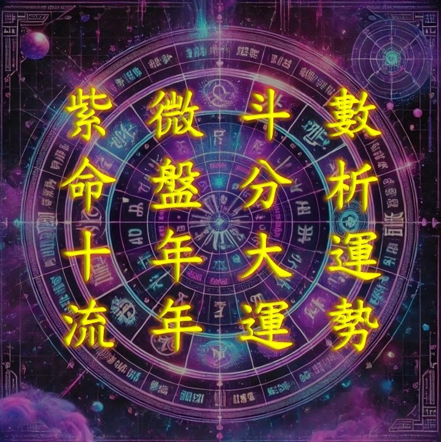

紫微斗數
命盤、流年
郭氏紫微
好壞大運
都是十年，你走到
第幾年
？
出生
決定你的性格，
性格
決定你的命運。
好的更好，
衰的更衰
，
大運重疊流年的威力
。
今年理財
是賠是賺？絕對離不開
你的運勢
。
好壞日子
都會到頭，你什麼時候
能轉運？
從
人格特質
，看出你
適合的職業
。
紫微運勢
有多準？再大的老闆
也會倒霉。
你的強運
在何時？找出你的
自化祿
。
你的
大運流年
好不好，看
祿權科忌
在哪。
倒霉的緣
一定會來，但原因
你能控制
。
這十年
會不會有錢？
看你的
大運財帛宮
。
